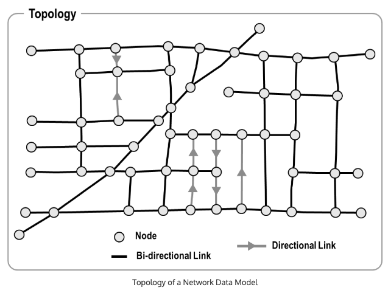
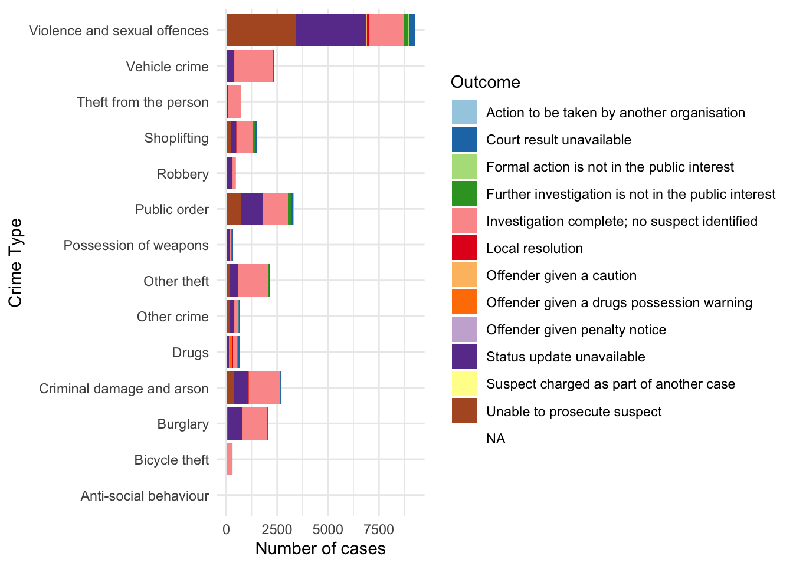
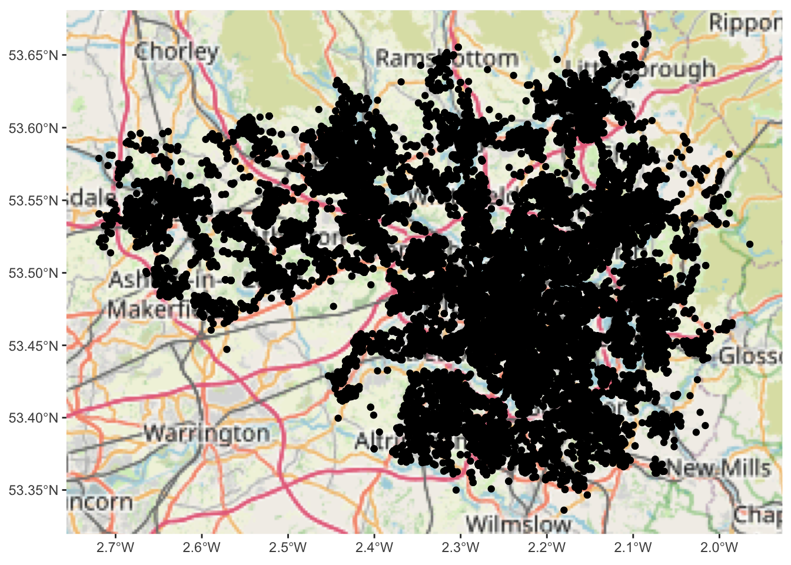
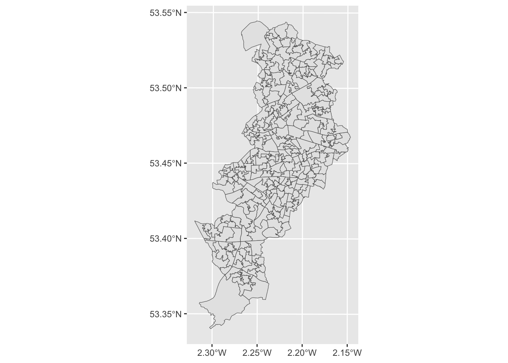
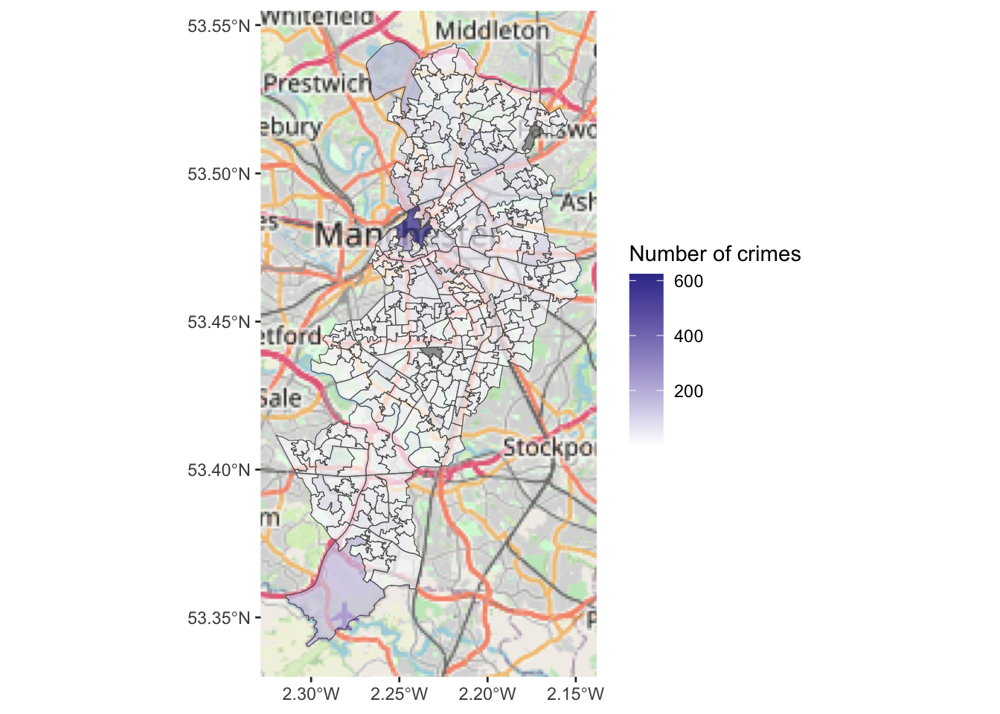

Chapter 2 Making Maps in R
This week we will start making some maps in R, and learn about how we can take regular crime data, and assign the appropriate geometry for our chosen unit of analysis. We will produce some maps, using possibly familiar ggplot notation, and learn some key terms around projection and coordinate reference systems which will be essential for your work in the coming weeks.
Today we will use the following packages, so make sure you have them installed:
dplyrggplot2ggspatialjanitorreadrsftibble
2.1 A quick introduction of terms
2.1.1 Geospatial Perspective - The Basics
Geospatial analysis provides a distinct perspective on the world, a unique lens through which to examine events, patterns, and processes that operate on or near the surface of our planet. Ultimately geospatial analysis concerns what happens where, and makes use of geographic information that links features and phenomena on the Earth’s surface to their locations.
We can talk about a few different concepts when it comes to spatial information. These are:
- Place
- Attributes
- Objects
2.1.1.1 Place
At the center of all spatial analysis is the concept of place. People identify with places of various sizes and shapes, from the room with the parcel of land, to the neighbourhood, to the city, the country, the state or the nation state. Places often have names, and people use these to talk about and distinguish names. Names can be official. Places also change continually as people move. The basis of rigorous and precise definition of place is a coordinate system, a set of measurements that allows place to be specified unambiguously and in a way that is meaningful to everyone.
2.1.1.2 Attributes
Attribute has become the preferred term for any recorded characteristic or property of a place. A place’s name is an obvious example of an attribute. But there can be other pieces of information, such as number of crimes in a neighbourhood, or the GDP of a country. Within GIS the term ‘attributes’ usually refers to records in a data table associated with individual elements in a vector map or cells in a grid (raster or image file). These data behave exactly as data you have encountered in your past experience. The rows represent observations, and the columns represent variables. The variables can be numeric or categorical, and depending on what they are, you can apply different methods to making sense of them. The difference with other kind of data table is that the observations, your rows, correspond to places or locations.
2.1.1.3 Objects
In spatial analysis it is customary to refer to places as objects. These objects can be a whole country, or a road. In forestry, the objects of interest might be trees, and their location will be represented as points. On the other hand, studies of social or economic patterns may need to consider the two-dimensional extent of places, which will therefore be represented as areas. These representations of the world are part of what is called the vector data model: A representation of the world using points, lines, and polygons. Vector models are useful for storing data that have discrete boundaries, such as country borders, land parcels, and streets. This is made up of pointsn (e.g., coordinates), lines (e.g., roads, rivers), and polygons (e.g., regions, areas):
- Points
- Points are pairs of coordinates, in latitude/longitude or some other standard system
- Lines
- Lines are ordered sequences of points connected by straight lines
- Polygons
- Polygons are ordered rings of points, also connected by straight lines to form polygons. It can contain holes, or be linked with separate islands.

Objects can also be raster data. Raster data is made up of pixels (or cells), and each pixel has an associated value. Simplifying slightly, a digital photograph is an example of a raster dataset where each pixel value corresponds to a particular colour. In GIS, the pixel values may represent elevation above sea level, or chemical concentrations, or rainfall etc. The key point is that all of this data is represented as a grid of (usually square) cells. You can find more on raster data here

2.1.1.4 Networks
We already mentioned lines that constitute objects of spatial data, such as streets, roads, railroads, etc. Networks constitute one-dimensional structures embedded in two or three dimensions (e.g., . Discrete point objects may be distributed on the network, representing phenomena such as landmarks, or observation points. Mathematically, a network forms a graph, and many techniques developed for graphs have application to networks. These include various ways of measuring a network’s connectivity, or of finding the shortest path between pairs of points on a network. You can have a look at the lesson on network analysis in the QGIS documentation

2.1.1.5 Maps: reference and thematic maps
Historically maps have been the primary means to store and communicate spatial data. Objects and their attributes can be readily depicted, and the human eye can quickly discern patterns and anomalies in a well-designed map.
In GIS we distinguish between reference and thematic maps. A reference map places the emphasis on the location of spatial objects such as cities, mountains, rivers, parks, etc. You use these maps to orient yourself in space and find out the location of particular places. Thematic maps, on the other hand, are about the spatial distribution of attributes or statistics. For example, the number of crimes across different neighbourhouds. Our focus in this book is on thematic maps.
2.1.1.6 Map projections and geographic coordinate systems
Whenever we put something into a map we need some sort of system to pinpoint the location. A coordinate system allows you to integrate any dataset with other geographical datasets within a common framework. There are hundreds of them. It is common to distinguish between geographic coordinate systems and projected coordinate systems. A geographic coordinate system is a three dimensional reference system that enables you to locate any location on earth. Often this is done with longitude, latitute and elevation. Projected coordinate systems or map projections, on the other hand, try to portray the surface of the earth or a portion of the earth on a two dimensional flat piece of paper or computer screen.
All projections of a sphere like the earth in a two dimensional map involve some sort of distortion. You can’t fit a three dimensional object into two dimensions without doing so. Projections differ to a large extent on the kind of distortion that they introduce. The decision as to which map projection and coordinate reference system to use, depends on the regional extent of the area you want to work in, on the analysis you want to do and often on the availability of data. Knowing the system you use would allow you to translate your data into other systems whenever this may be necessary. Often you may have to integrate data that is provided to you in different coordinate or projected systems. As long as you know the systems, you can do this.
[Footnote to this for more detail: https://www.youtube.com/watch?v=6tmDxTAjux0]
A traditional method of representing the earth’s shape is the use of globes. When viewed at close range the earth appears to be relatively flat. However when viewed from space, we can see that the earth is relatively spherical. Maps, are representations of reality. They are designed to not only represent features, but also their shape and spatial arrangement. Each map projection has advantages and disadvantages. The best projection for a map depends on the scale of the map, and on the purposes for which it will be used. For your purposes, you just need to understand that essentially there are different ways to flatten out the earth, in order to get it into a 2-dimensional map.
The process of creating map projections can be visualised by positioning a light source inside a transparent globe on which opaque earth features are placed. Then project the feature outlines onto a two-dimensional flat piece of paper. Different ways of projecting can be produced by surrounding the globe in a cylindrical fashion, as a cone, or even as a flat surface. Each of these methods produces what is called a map projection family. Therefore, there is a family of planar projections, a family of cylindrical projections, and another called conical projections.

With the help of coordinate reference systems (CRS) every place on the earth can be specified by a set of three numbers, called coordinates. In general CRS can be divided into projected coordinate reference systems (also called Cartesian or rectangular coordinate reference systems) and geographic coordinate reference systems.

The use of Geographic Coordinate Reference Systems is very common. They use degrees of latitude and longitude and sometimes also a height value to describe a location on the earth’s surface. The most popular is called WGS 84. This is the one you will most likely be using, and if you get your data in latitude and longitude, then this is the CRS you are working in. It is also possible that you will be using a projected CRS. This two-dimensional coordinate reference system is commonly defined by two axes. At right angles to each other, they form a so called XY-plane. The horizontal axis is normally labelled X, and the vertical axis is normally labelled Y.
Working with data in the UK, on the other hand, you are most likely to be using British National Grid (BNG). The Ordnance Survey National Grid reference system is a system of geographic grid references used in Great Britain, different from using Latitude and Longitude. In this case, points will be defined by “Easting” and “Northing” rather than “Longitude” and “Latitude”. It basically divides the UK into a series of squares, and uses references to these to locate something. The most common usage is the six figure grid reference, employing three digits in each coordinate to determine a 100 m square. For example, the grid reference of the 100 m square containing the summit of Ben Nevis is NN 166 712. Grid references may also be quoted as a pair of numbers: eastings then northings in meters, measured from the southwest corner of the SV square. For example, the grid reference for Sullom Voe oil terminal in the Shetland Islands may be given as HU396753 or 439668,1175316
 This will be important later on when we are linking data from different projections, or when you look at your map and you try to figure out why it might look “squished”.
This will be important later on when we are linking data from different projections, or when you look at your map and you try to figure out why it might look “squished”.
2.1.1.7 Density estimation
One of the more useful concepts in spatial analysis is density - the density of humans in a crowded city, or the density of retail stores in a shopping centre. Mathematically, the density of some kind of object is calculated by counting the number of such objects in an area, and dividing by the size of the area. To read more about this, I recommend Silverman, Bernard W. Density estimation for statistics and data analysis. Vol. 26. CRC press, 1986.
2.1.2 Summary
Hopefully this gives you a few things to think about. Be sure that you are confident to know about:
- Spatial objects - what they are and how they are represented
- Attributes - the bits of information that belong to your spatial objects
- Maps and projections - especially what WSG84 and BNG mean, and why it’s important that you know what CRS your data have
2.2 Getting some spatial data to put on a map
Alright let’s get some practical experience where we take some crime data, and find out how we can put it on the map!
2.2.1 Find some relevant data to show: obtaining data on crime
For your first crime map, we better get some real world crime data. This can be done for the UK easily, as anonymised open crime data are released for the public to use. We can play around with police recorded crime data, which can be downloaded from the police.uk website.
Let’s download some data for crime in Manchester.
2.2.2 Activity 1: Get some crime data
To do acquire the police recorded crime data in the UK, you can use data.police.uk/data website. If you want to use the data from ‘data.police.uk’, you need to follow these steps:
Choose
Custom downloadunderDatatab, in order to download some data.In
Date rangejust select one month of data. Choose whatever month you like. Unfortunately, for GMP there is no more recent data available since June 2019. This is because they are having some serious IT issues see this article which apparently have disrupted this flow of data.Select the
Forceyou are interested in and tick the box next to it.In
Data setstickInclude crime data.Finally click on
Generate Filebutton.
As you may notice, the data is available from Jan 2020 under Custom download tab. Because the latest data of GMP is June 2019, we should download GMP data from Archive tab, not Custom download tab. If you scroll down, you will find June 2021 folder which contains crime data from July 2018 to June 2021. I know!!😩 it’s a huge file as it has ‘crime’ and ‘stop and search’ data of all police forces from July 2018 to June 2021. You could download the data folder as a practice or use the data that we already have downloaded for you. You can go to this week’s learning materials to download from Blackboard or download the data from a website where we keep the data.
Before we can use this data we need to read it or import it into R and turn it into a dataframe object. To read in the .csv file, which is the format we just downloaded, the command is read_csv() from the readr package. You’ll need to load this package first.
Again there are two ways to read in the data, if you want to open a window where you can manually navigate and open the file, you can pass file.choose() argument to the read_csv() function as illustrated earlier.
#This code creates a dataframe object called crimes which will include the spreadsheet in the file we have downloaded. In my case, that is 2007-11-greater-manchester-street.csv.
crimes <- read_csv(file.choose())Or, if you know the path to your file, you can code it in there, within quotation marks:
## Rows: 32058 Columns: 12
## ── Column specification ───────────────────────────────────────────────────────
## Delimiter: ","
## chr (9): Crime ID, Month, Reported by, Falls within, Location, LSOA code, LS...
## dbl (2): Longitude, Latitude
## lgl (1): Context
##
## ℹ Use `spec()` to retrieve the full column specification for this data.
## ℹ Specify the column types or set `show_col_types = FALSE` to quiet this message.Or, you can download it from the a website where we keep the data with the following code:
# save URL into an object
urlfile <- "https://raw.githubusercontent.com/eonk/cm_book/main/data/2019-06-greater-manchester-street.csv"
crimes <- read_csv(url(urlfile))You might notice that the object crimes has appeared in your work environment window. It will tell you how many observations (rows - and incidentally the number of recorded crimes in June 2019 within the GMP jurisdiction) and how many variables (columns) your data has.
Let’s have a look at the crimes dataframe with the View() function. This will open the data browser in RStudio
If you rather just want your results in the console, you can use the glimpse() function from the tibble package. This function does just that, it gives you a quick glimpse of the first few cases in the dataframe. Notice that there are two columns (Longitude and Latitude) that provide the require geographical coordinates that we need to plot this data.
## Rows: 32,058
## Columns: 12
## $ `Crime ID` <chr> NA, "aa1cc4cb0c436f463635890bcb4ff2cba08f59925…
## $ Month <chr> "2019-06", "2019-06", "2019-06", "2019-06", "2…
## $ `Reported by` <chr> "Greater Manchester Police", "Greater Manchest…
## $ `Falls within` <chr> "Greater Manchester Police", "Greater Manchest…
## $ Longitude <dbl> -2.464422, -2.441166, -2.444807, -2.444807, -2…
## $ Latitude <dbl> 53.61250, 53.61604, 53.61151, 53.61151, 53.606…
## $ Location <chr> "On or near Parking Area", "On or near Pitcomb…
## $ `LSOA code` <chr> "E01004768", "E01004768", "E01004768", "E01004…
## $ `LSOA name` <chr> "Bolton 001A", "Bolton 001A", "Bolton 001A", "…
## $ `Crime type` <chr> "Anti-social behaviour", "Violence and sexual …
## $ `Last outcome category` <chr> NA, "Unable to prosecute suspect", "Unable to …
## $ Context <lgl> NA, NA, NA, NA, NA, NA, NA, NA, NA, NA, NA, NA…You may notice that a lot of the variable names are messy in that they have a space in them - this can cause issues, so before playing around too much with the data we want to clean this up.
Luckily there is a very handy package you can use for this called janitor which contains the function clean_names().
##
## Attaching package: 'janitor'## The following objects are masked from 'package:stats':
##
## chisq.test, fisher.testNow the names are much neater. You can print them all for a view using the names() function:
## [1] "crime_id" "month" "reported_by"
## [4] "falls_within" "longitude" "latitude"
## [7] "location" "lsoa_code" "lsoa_name"
## [10] "crime_type" "last_outcome_category" "context"2.3 From dataframes to spatial objects: finding spatial information in our data
Having had a chance to inspect the data set you’ve downloaded, let’s consider what sort of spatial information we might be able to use.
2.3.1 Activity 2: Find the spatial data
If you have a look at the column names, what are some of the variables which you think might have some spatial component? Have a think about each column, and how you think it may help to put these crimes on the map. Discuss in your groups. Once you are done, read on.
So what did you decide in your discussion? There are a few answers here.
In fact there are one each to map onto point, line, and polygon, which we read about earlier.
2.3.2 The point
First, and possibly most obvious, are the coordinates provided with each crime incident recorded. You can find this in the two columns - Longitude and Latitude. These two column help put each crime incident on a specific point on a map. For example, let’s take the very first crime incident. Here we use the head() function and specify that we want the first 1 rows only with n=1 parameter.
## # A tibble: 1 × 12
## crime_id month reported_by falls_within longitude latitude location lsoa_code
## <chr> <chr> <chr> <chr> <dbl> <dbl> <chr> <chr>
## 1 <NA> 2019-… Greater Ma… Greater Man… -2.46 53.6 On or n… E01004768
## # ℹ 4 more variables: lsoa_name <chr>, crime_type <chr>,
## # last_outcome_category <chr>, context <lgl>You can see that the values are -2.464422 for Longitude and 53.612495 for Latitude. These two numbers allow us to put this point on a map.
2.3.3 The line
Another column which contains information about where the crime happened is the aptly named location variable. This shows you a list of locations related to where the crimes happened. You may see a few values such as on or near XYZ street. Let’s look again at the first entry.
## # A tibble: 1 × 12
## crime_id month reported_by falls_within longitude latitude location lsoa_code
## <chr> <chr> <chr> <chr> <dbl> <dbl> <chr> <chr>
## 1 <NA> 2019-… Greater Ma… Greater Man… -2.46 53.6 On or n… E01004768
## # ℹ 4 more variables: lsoa_name <chr>, crime_type <chr>,
## # last_outcome_category <chr>, context <lgl>You can see that the value is On or near Parking Area this isn’t great, as we might struggle to identify which parking area… Some other ones are more useful, let’s look at the last entry for example with the tail() function.
## # A tibble: 1 × 12
## crime_id month reported_by falls_within longitude latitude location lsoa_code
## <chr> <chr> <chr> <chr> <dbl> <dbl> <chr> <chr>
## 1 75e215f9… 2019… Greater Ma… Greater Man… -2.57 53.5 On or n… E01006347
## # ℹ 4 more variables: lsoa_name <chr>, crime_type <chr>,
## # last_outcome_category <chr>, context <lgl>You can see that the value is On or near Fulwood Road. This makes our crime much easier to find, we just need to locate where is Fulwood Road. We might have a shapefile of lines of all the roads of Manchester, and if we did, we can link the crime to that particular road, in order to map it.
2.3.4 The polygon
What more? You may also have seen the column lsao_name seems to have some spatial component, Let’s have a look at the first crime again.
## # A tibble: 1 × 12
## crime_id month reported_by falls_within longitude latitude location lsoa_code
## <chr> <chr> <chr> <chr> <dbl> <dbl> <chr> <chr>
## 1 <NA> 2019-… Greater Ma… Greater Man… -2.46 53.6 On or n… E01004768
## # ℹ 4 more variables: lsoa_name <chr>, crime_type <chr>,
## # last_outcome_category <chr>, context <lgl>You see the value for LSOA name is Bolton 001A - Bolton we know is a Borough of Greater Manchester, but what is the 001 for ?
Well it denotes a sparticular geographical sub-unit within Bolton called a Lower Layer Super Output Area. This is a unit of UK Census Geography. The basic unit for Census Geography is an ‘Outout area’ - this is the resolution at which we can access data from the UK Census. We will be making use of census data later in the course. The Ourput Area (OA) is therefore the smallest unit we could use. Normally, in this module, we will be using a slightly larger version - the Lower Super Output Area (LSOA).
There are now 181,408 OAs, 34,753 lower layer super output areas (LSOA) and 7,201 middle layer super output areas (MSOA) in England and Wales. The neat thing about these Census geographies is the idea is that they don’t change (unlike administrative boundaries such as wards) and were created with statistical analysis in mind. The less neat thing is that although we use them to operationalise the concept of neighbourhood a lot, they may not bear much resemblance to what residents might think of as their neighbourhood. Think for a minute - do you know what LSOA you live in? Most likely you answered no. If you answered yes, I am impressed and you get geography nerd cred. Well done.
Anyway back to our crime data. You see we have two columns that reference LSOAs, lsoa_name and lsoa_code. We can use these to link our crime data to a shapefile of a polygon which contains the geometries needed to put the crime data on the map.
2.4 Putting crime on the map - simple features
So how can we use these spatial details to put our crimes on the map? We need to somehow specify a geometry for our data, which links each unit of analysis (whether that is the point, line, or polygon) to a relevant geographical representation, which allows us to put this thing on the map.
How you add geographical information will vary with the type of information we have, but in all of these, we will use the simple features framework.

What are simple features? sf package author Edzer Pebesma describes simple features as a standardized way of encoding spatial vector data (points, lines, polygons) in computers. The sf package is an R package for reading, writing, handling, and manipulating simple features in R, implementing the vector (points, lines, polygons) data handling functionality.
Traditionally spatial analysis in R were done using the sp package which creates a particular way of storing spatial objects in R. When most packages for spatial data analysis in R and for thematic cartography were first developed sp was the only way to work with spatial data in R. There are more than 450 packages rely on sp, making it an important part of the R ecosystem. More recently a new package, sf (which stands for “simple features”), is revolutionising the way that R does spatial analysis. This new package provides a new way of storing spatial objects in R and most recent R packages for spatial analysis and cartography are using it as the new default. It is easy to transform sf objects into sp objects, so that those packages that still don’t use this new format can be used. But in this course we will emphasise the use of sf whenever possible. You can read more about the history of spatial packages and the sf package in the first two chapters of this book.
Features can be thought of as “things” or objects that have a spatial location or extent; they may be physical objects like a building, or social conventions like a political state. Feature geometry refers to the spatial properties (location or extent) of a feature, and can be described by a point, a point set, a linestring, a set of linestrings, a polygon, a set of polygons, or a combination of these. The simple adjective of simple features refers to the property that linestrings and polygons are built from points connected by straight line segments. Features typically also have other properties (temporal properties, color, name, measured quantity), which are called feature attributes.
For more detailed insight I recommend reading the paper Simple Features for R: Standardized Support for Spatial Vector Data
2.4.1 Mapping points with sf
Let’s get started with making some maps using sf. First, make sure you install the package, and then load with library() function.
## Linking to GEOS 3.11.0, GDAL 3.5.3, PROJ 9.1.0; sf_use_s2() is TRUENow we can use the functions of sf in order to introduce geometries. Let’s start with the points
2.4.1.1 Activity 3: Creating a sf object of points
We know that we have two columns one for Longitude and one for Latitude, which pinpoint each crime event to a specific point, close to where it happened. Not quite where it happened, as the data are anonymised (more on this later), but for our purposes here, we can assume this is the location of the crime.
To map these points, we can transform our ordinary dataframe into a simple features object.
To do so, we can use the st_as_sf() function, into which we need to specify what we are to transform (our dataframe), where the spatial data can be found (our columns which hold the latitude and longidude information), and also what coordinate reference system the object has (see above our discussion about projections and coordinate reference systems).
Latitude longitude coordinates specify location on the WGS 84 CRS (remember I said to keep this one in mind!). We can tell R that this is our CRS of choice by including it’s [EPSG identifier] (https://en.wikipedia.org/wiki/EPSG_Geodetic_Parameter_Dataset) as a parameter in our function. It is handy to know the more common EPSG identifiers. For example, for WGS84 the EPSG identifier is 4326. For British National Grid, the identifier is 27700. We will be making use of these numbers, so do note them down somewhere.
Putting it all together in practice, we can create a simple features object from our dataframe using the latitude and longitude columns:
crimes_sf <- st_as_sf(crimes, #dataframe
coords = c("longitude", "latitude"), #columns with coordinates
crs = 4326) #crs is WGS84We can see that this is now a simple features object using the class() function the we see the result “sf”:
## [1] "sf" "tbl_df" "tbl" "data.frame"You might also notice something else that is different between crimes and crimes_sf. Have a look at the dimension (hint look in your ‘Environment’ tab). Do you see? Discuss what you think is different with your neighour or one of the teaching team.
2.4.1.2 Activity 4: Mapping our points
Now that we have this sf object, how can we map it? I mentioned before about the graphical package ggplot2. We can use this, and its syntax, in order to map spatial data using the geom_sf() geometry.
First, a quick refresher on ggplot and the grammar of graphics. The grammar of graphics upon which this package is based on defines various components of a graphic. Some of the most important are:
-The data: For using ggplot2 the data has to be stored as a data frame or tibble.
-The geoms: They describe the objects that represent the data (e.g., points, lines, polygons, etc..). This is what gets drawn. And you can have various different types layered over each other in the same visualisation.
-The aesthetics: They describe the visual characteristics that represent data (e.g., position, size, colour, shape, transparency).
-Facets: They describe how data is split into subsets and displayed as multiple small graphs.
-Stats: They describe statistical transformations that typically summarise data.
Let’s take it one step at the time.
Essentially the philosophy behind this is that all graphics are made up of layers. The package ggplot2 is based on the grammar of graphics, the idea that you can build every graph from the same few components: a data set, a set of geoms—visual marks that represent data points, and a coordinate system.
Take this example (all taken from Wickham, H. (2010). A layered grammar of graphics. Journal of Computational and Graphical Statistics, 19(1), 3-28.)
You have a table such as:

You then want to plot this. To do so, you want to create a plot that combines the following layers:

This will result in a final plot:

Taking our crime data as an example, we would build up our plot as follows:
Load ggplot2 package
Data:

Geometry:

Aesthetics:

And then you could add any facets (for example if we had more than one month of data) or any statistics (for example error bars) with facet and stats layers. One more thing I do want to show is tidying up your chart, you can add theme and clean up your labels and titles and colour scheme.
ggplot(crimes, aes(x = crime_type, fill = last_outcome_category)) +
geom_bar() +
coord_flip() +
theme_minimal() +
xlab("Crime Type") +
ylab("Number of cases") +
scale_fill_brewer(type = "qual", palette = 3, name = "Outcome")
This is not the greatest graph you’ll ever see, but it illustrates the process. Do read up on ggplot2 for example in Hadley Wickham’s book R4DS chapter on data visualisation.
So how can we use this for spatial data? We can use the geom_sf() function to do so.
2.4.1.3 Activity 5: Mapping our points
Using geom_sf is slightly different to other geometries, for example how we used geom_bar() above. First we initiate the plot with the ggplot() function but don’t include the data in there. Instead, it is in the geometry where we add the data. And second we don’t need to specify the mapping of x and y. Since this is in the geometry column of our spatial object. Like so:

And here we have a map of each point in our data set, each recorded crime in June 2019 in Greater Manchester.
Would you call this a map though? While it is presenting spatial data, there is not a lot of meaning being communicated. Point maps generally can be messy and their uses are specific to certain situations and cases, usually when you have fewer points, but here, these points are especially devoid of any meaning, as they are floating in a graph grid. SO let’s give it a basemap.
We can do this by adding a layer to our graph object. Specifically we will use the annotation_map_tile() from the ggspatial package. This provides us with a static Open Street Map layer behind our data, giving it (some) more context.
Remember to load the package (and install if you haven’t already)
And then use the annotation_map_tile() function, making sure to place it before the geom_sf points layer, so the background map is placed first, and the points on top of that:
## Zoom: 9
NOTE: if you get an error, read it first. If it says something like you are missing a package (e.g. ‘prettymapr’) then install that package!
If that doesn’t solve the problem, try the following code instead:
ggplot() +
ggspatial::annotation_map_tile(cachedir = system.file("rosm.cache", package = "ggspatial")) +
geom_sf(data = crimes_sf)So what you see above is what we can call a basemap. The term basemap is seen often in GIS and refers to a collection of GIS data and/or orthorectified imagery that form the background setting for a map. The function of the basemap is to provide background detail necessary to orient the location of the map. Basemaps also add to the aesthetic appeal of a map.
In the lecture and some readings these are described as reference maps. We often may want to use these reference maps as basemaps for our thematic and point maps. They may give us context and help with the interpretation. You can see above that you are seeing the Open Street Map Basemap. This is one option but there are others.
Anyway let’s leave out points for now, and move on to how we might map our lines and polygons.
2.4.2 Mapping data by joining it to sf objects
What about our other two columnds, location, and LSOAs? Well to put these on the map, we need a geometry representation of them. We will learn in this section where you may find these, how to download them, turn them into sf objects, and how to link your data to them to be able to map them.
2.4.2.1 Activity 6: Finding shapefiles
In this section you are going to learn how you take one of the most popular data formats for spatial objects, the shapefile, and read it into R. The shapefile was developed by ESRI, the developers and vendors or ArcGIS. And although many other formats have developed since and ESRI no longer holds the same market position it once occupied (though they’re still the player to beat), shapefiles continue to be one of the most popular formats you will encounter in your work. You can read more about shapefiles here.
We are going to learn here how to obtain shapefiles for British census geographies. In the class today we talked about the idea of neighborhouds and we explained how a good deal of sociological and criminological work traditionally used census geographies as proxies for neighbourhouds. As of today, they still are the geographical subdivisions for which we can obtain a greater number of attribute information (e.g., sociodemographics, etc.).
For this activity we will focus on the polygon (the LSOA) rather than the lines of the streets, but the logic is more or less the same. Remember above we talked about what is a census geography. You can read more about census boundary data here. “Boundary data are a digitised representation of the underlying geography of the census”. Census Geography is often used in research and spatial analysis because it is divided into units based on population counts, created to form comparable units, rather than other administrative boundaries such as wards or police force areas. However depending on your research question and the context for your analysis, you might be using different units. The hierarchy of the census geographies goes from Country to Local Authority to Middle Layer Super Output Area (MSOA) to Lower Layer Super Output Area (LSOA) to Output Area:

Here we will get some boundaries for Manchester. Let’s use the LSOA level, so that we can link back to our crime data earlier. These are geographical regions designed to be more stable over time and consistent in size than existing administrative and political boundaries. LSOAs comprise, on average, 600 households that are combined on the basis of spatial proximity and homogeneity of dwelling type and tenure.
So to get some boundary data, you can use the UK Data Service website. There is a simple Boundary Data Selector tool which we can use.
When you get to the link, you will see on the top there is some notification to help you with the boundary data selector. If in the future you are looking for boundary data and you are feeling unsure at any point, feel free to click on that note “How to use Boundary Data Selector” which will help to guide you.
For now, let’s focus on the selector options. Here you can choose the country you want to select shapefiles for. We select “England”. You can also choose the type of geography we want to use. Here we select “Statistical Building Block”, as discussed above. And finally you can select when you want it for. If you are working with historical data, it makes sense to find boundaries that match the timescale for your data. Here we will be using data from pre-2021, so we will need the historic LSOAs (2011 to 2020).

Once you have selected these options, click on the “Find” button. That will populate the box below:

Here you can select the boundaries we want. As discussed, we want the census lower super output areas. But again, your future choices here will depend on what data you want to be mapping.
Once you’ve made your choice, click on “List Areas”. This will now populate the box below. We are here concerned with Manchester. However you can select more than one if you want boundaries for more than one area as well. Just hold down “ctrl” to select multiple areas individually, or the shift key to select everything in between.

Once you’ve made your decision click on the “Extract Boundary Data” button. You will see the following message:

You can bookmark, or just stay on the page and wait. How long you have to wait will depend on how much data you have requested to download.
When your data is read, you will see the following message:

You have to right click on the “BoundaryData.zip”, and hit Save Target as on a PC or Save Link As on a Mac:

Navigate to the folder you have created for this analysis, and save the .zip file there. Extract the file contents using whatever you like to use to unzip compressed files.
You should end up with a folder called “BoundaryData”. Have a look at its contents:

So you can see immediately that there are some documentations around the usage of this shapefile, in the readme and the terms and conditions. Have a look at these as they will contain information about how you can use this map. For example, all your maps will have to mention where you got all the data from. So since you got this boundary data from the UKDS, you will have to note the following:
“Contains National Statistics data © Crown copyright and database right [year] Contains OS data © Crown copyright [and database right] (year)”
You can read more about this in the terms and conditions document.
But then you will also notice that there are 4 files with the same name “england_oac_2011”. It is important that you keep all these files in the same location as each other! They all contain different bits of information about your shapefile (and they are all needed):
- .shp — shape format; the feature geometry itself - this is what you see on the map
- .shx — shape index format; a positional index of the feature geometry to allow seeking forwards and backwards quickly
- .dbf — attribute format; columnar attributes for each shape, in dBase IV format.
- .prj — projection format; the coordinate system and projection information, a plain text file describing the projection using well-known text format
Sometimes there might be more files associated with your shapefile as well, but we will not cover them here. So unlike when you work with spreadsheets and data in tabular form, which typically is just all included in one file; when you work with spatial data, you have to live with the required information living in separate files that need to be stored together. So, being tidy and organised is even more important when you carry out projects that involve spatial data. Please do remember the suggestions we provided last week as to how to organise your RStudio project directories.
2.4.2.2 Activity 7: Reading shapefiles into R
To read in your data, you will need to know the path to where you have saved it. Ideally this will be in your data folder in your project directory.
Let’s create an object and assign it our shapefile’s name:
# Remember to use the appropriate pathfile in your case
# alt, manchester_lsoa <- st_read(file.choose())
shp_name <- "data/BoundaryData/england_lsoa_2011.shp"Make sure that this is saved in your working directory, and you have set your working directory.
Now use the st_read() function to read in the shapefile:
## Reading layer `england_lsoa_2011' from data source
## `/Users/user/Desktop/resquant/crime_mapping_textbook/data/BoundaryData/england_lsoa_2011.shp'
## using driver `ESRI Shapefile'
## Simple feature collection with 282 features and 3 fields
## Geometry type: POLYGON
## Dimension: XY
## Bounding box: xmin: 378833.2 ymin: 382620.6 xmax: 390350.2 ymax: 405357.1
## Projected CRS: OSGB36 / British National GridNow you have your spatial data file. You can have a look at what sort of data it contains, the same way you would view a dataframe, with the View() function:
## Rows: 282
## Columns: 4
## $ label <chr> "E08000003E02001062E01005066", "E08000003E02001092E01005073",…
## $ name <chr> "Manchester 018E", "Manchester 048C", "Manchester 018A", "Man…
## $ code <chr> "E01005066", "E01005073", "E01005061", "E01005062", "E0100506…
## $ geometry <POLYGON [m]> POLYGON ((384850 397432, 38..., POLYGON ((382221.1 38…And of course, since it’s spatial data, you can map it using the geom_sf() function, as we did with our points:

Great, we now have an outline of the LSOAs in Manchester. Notice how the shape is different to that of the points in our crime data. Why do you think this is? Discuss your thoughts with your neighbour. Or one of the teaching team. Don’t be shy!
2.4.2.3 Activity 8: Data wrangling with dplyr
In order to map crimes to LSOAs we might want to take a step back and think about unit of analysis at which our data are collected. In our original dataframe of crimes, we saw that each crime incident is one row. So the unit of anlysis is each crime. Since we were looking to map each crime at the location it happened, we used the latitude and longitude supplied with each one, and this supplied a geometry each for each crime type.
However, when we are looking to map our data to LSOA level, we need to match the crime data to the geometry we wish to display.
Have a look at the manchester_lsoa object we mapped above. How many rows (observations) does it have? You can check this by looking in the Environment pane, or by using the nrow() function.
## [1] 282You can see this has 282 rows. This means we have geometries for 282 LSOAs.
On the other hand, our crimes dataframe has 32058 rows, one for each crime (observation). So how can we match these up? The answer lies in thinking about what it is that our map using LSOAs as our unit of analysis will be able to tell us. Think of other maps of areas - what are they usually telling you? Usually we expect to see crimes per neighbourhood - something like this. So our unit of analysis needs to be LSOA, and for each one we need to know how many crimes occurred in that area.
To achieve this, we will wrangle our data using functions from the dplyr package. This is a package for conducting all sorts of operations with data frames. We are not going to cover the full functionality of dplyr (which you can consult in this tutorial), but we are going to cover three different very useful elements of dplyr: the select function, the group_by function, and the piping operator.
First load the library:
The select() function provides you with a simple way of subsetting columns from a data frame. So, say we just want to use one variable, lsoa_code, from the crimes dataframe and store it in a new object we could write the following code:
We can also use the group_by() function for performing group operations. Essentially this function ask R to group cases within categories and then do something with those grouped cases. So, say, we want to count the number of cases within each LSOA, we could use the following code:
#First we group the cases by LSOA code and stored this organised data into a new object
grouped_crimes <- group_by(new_object, lsoa_code)
#Then we could count the number of cases within each category and use the summarise function to print the results
summarise(grouped_crimes, count = n())
#We could infact create a new dataframe with these results
crime_per_LSOA <- summarise(grouped_crimes, count = n())As you can see we can do what we wanted, create a new dataframe with the required info, but if we do this we are creating many objects that we don’t need, one at each step. Instead there is a more efficient way of doing this, without so many intermediate steps clogging up our environment with unnecessary objects. That’s where the piping operator comes handy. The piping operator is written like %>% and it can be read as “and then”. Look at the code below:
#First we say create a new object called crime_per_lsoa, and then select only the LSOA.code column to exist in this object, and then group this object by the LSOA.code, and then count the number of cases within each category, this is what I want in the new object.
crimes_per_lsoa <- crimes %>%
group_by(lsoa_code) %>%
summarise(count=n())Essentially we obtain the same results but with more streamlined and elegant code, and not needing additional objects in our environment.
And now we have a new object, crimes_per_lsoa if we have a look at this one, we can now see what each row represents one LSOA, and next to it we have a variable for the number of crimes from each area. We created a new dataframe from a frequency table, and as each row of the crimes data was one crime, the frequency table tells us the number of crimes which occurred in each LSOA.
Those of you playing close attention might note that there are still more observations in this dataframe (1671) than in the manchester_lsoas one (282). Why do you think that might be? Look back at how you answered the final question for the previous activity for a hint.
2.4.2.4 Activity 9: Join data to sf object
Our next task is to link our crimes data to our sf spatial object to help us map this. Notice anything similar between the data from the shapefile and the frequency table data we just created? Do they share a column?
Yes! You might notice that the lsoa_code field in the crimes data matches the values in the code field in the spatial data. In theory we could join these two data tables.
So how do we do this? Well what you can do is to link one data set with another. Data linking is used to bring together information from different sources in order to create a new, richer dataset. This involves identifying and combining information from corresponding records on each of the different source datasets. The records in the resulting linked dataset contain some data from each of the source datasets. Most linking techniques combine records from different datasets if they refer to the same entity (an entity may be a person, organisation, household or even a geographic region.)
You can merge (combine) rows from one table into another just by pasting them in the first empty cells below the target table—the table grows in size to include the new rows. And if the rows in both tables match up, you can merge columns from one table with another by pasting them in the first empty cells to the right of the table—again, the table grows, this time to include the new columns.
Merging rows is pretty straightforward, but merging columns can be tricky if the rows of one table don’t always line up with the rows in the other table. By using left_join() from the dplyr package, you can avoid some of the alignment problems.
left_join() will return all rows from x, and all columns from x and y. Rows in x with no match in y will have NA values in the new columns. If there are multiple matches between x and y, all combinations of the matches are returned.
So we’ve already identified that both our crimes data, and the spatial data contain a column with matching values, the codes for the LSOA that each row represents.

You need a unique identifier to be present for each row in all the data sets that you wish to join. This is how R knows what values belong to what row! What you are doing is matching each value from one table to the next, using this unique identified column, that exists in both tables. For example, let’s say we have two data sets from some people in Hawkins, Indiana. In one data set we collected information about their age. In another one, we collected information about their hair colour. If we collected some information that is unique to each observation, and this is the same in both sets of data, for example their names, then we can link them up, based on this information. Something like this:

And by doing so, we produce a final table that contains all values, lined up correctly for each individual observation, like this:

This is all we are doing, when merging tables, is we are making use that we line up the correct value for all the variables, for all our observations.
Why are we using left join though? There is a whole family of join functions as part of dplyr which join data sets. There is also a right_join, and an inner_join and an outer_join and a full_join. But here we use left join, because that way we keep all the rows in x (the left-hand side dataframe), and join to it all the matched columns in y (the right-hand side dataframe).
So let’s join the crimes data to the spatial data, using left_join():
We have to tell left_join what are the dataframes we want to join, as well as the names of the columns that contain the matching values in each one. This is “code” in the manchester_lsoa dataframe and “lsoa_code” in the crimes_per_lsoa dataframe. Like so:
Now if you have a look at the data again, you will see that the column of number of crimes (n) has been added on.
2.4.2.5 Activity 10: Mapping our data at polygon level
Now that we have joined the crimes data to the geometry, you can use this to make our map!
Remember our original empty map:

Well now, since we have the column (variable) for number of crimes here, we can use that to share the polygons based on how many crimes there are in each LSOA. We can do this by specifying the fill= parameter of the geom_sf function.

We can add a basemap, and adjust the colour scheme, and even the opacity to see under our shape files.
ggplot() +
annotation_map_tile() + # add basemap
geom_sf(data = manchester_lsoa, aes(fill = count), alpha = 0.7) + # alpha sets the opacity
scale_fill_gradient2(name ="Number of crimes") #use scale_fill_gradient2() for a different palette and name the variable on the legend## Zoom: 102.5 Summary
In this session we had a play around with some regular old crime data and discovered how we can use the sf package in R to assign it a geometry (both at point and polygon level), and how that can help us visualise our results. We covered some very important concepts such as projections and coordinate reference systems, and we had a play at acquiring shapefiles which can help us visualise our data. We had a think about units of analysis, and how that will affect how we visualise our data.
Make sure to complete the homework tasks available on Blackboard, and once you have done that, and read all the readings and watched all the videos, complete your homework quiz.
Next week we will spend a bit of more time discussing how to make good choices when producing maps.